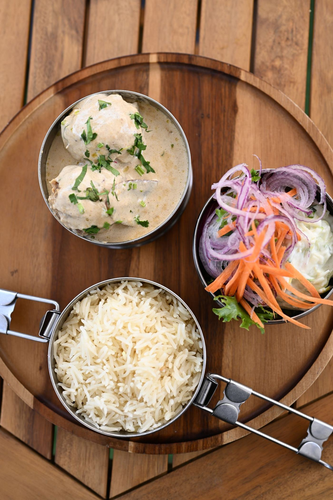

Midi
Dabbas & Indi Bowls
Des Dabbas inspirés chacun d’une ville et des Indi Bowls mi-chauds, mi-froids, pensés pour une journée de travail : une cuisine indienne complète et équilibrée, sans le coup de barre de l’après-midi. L’offre du midi est aussi celle de la vente à emporter et de la livraison.
Voir la carte du midi